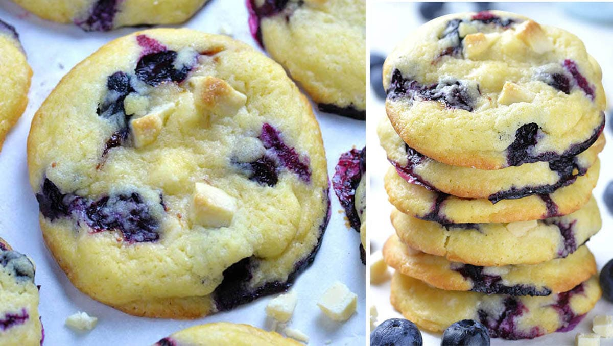

Blueberry Cookie Recipe

Description:
A soft-baked blueberry-chunk cookie using real blueberries.
Ingredients:
- 1 ½ cups flour
- 1 teaspoon corn starch
- ¼ teaspoon salt
- ¾ teaspoons baking powder
- ½ cup unsalted butter
- ¾ cup sugar
- 1 egg
- 1 teaspoon vanilla
- 4 oz. white chocolate-chopped into small chunks
- ¾ cup blueberries
- For Filling:
- 2.5 oz. cream cheese softened
- 1 Tablespoon powdered sugar
- ½ teaspoon vanilla
- 3–4 tablespoons blueberry jam
Steps:
- In a small bowl whisk together dry ingredients: flour, corn starch, salt and baking powder, set aside.
- Cream butter and sugar on high speed for about 2 minutes, until light and creamy. Add egg and vanilla and mix to combine.
- Running your mixer on low, mix in dry ingredients mix.
- Fold in about ¾ of white chocolate chunks, reserve remaining to press on top of cookies.
- Finally, fold in blueberries with a rubber spatula, but do this really gently and try not to break the berries.
- The dough will be thick and sticky. Cover and refrigerate for 2 hours.
- To make the filling, mix cream cheese, vanilla and powdered sugar just to combine and place in the fridge.
- When ready to bake preheat the oven to 350 F and line baking sheets with parchment paper.
- To assemble the cookies, scoop one heaping tablespoon of dough and make a deep bowl. Fill with 1 teaspoon of cream cheese mixture and about ¾ teaspoons of blueberry jam.
- Top with ½ Tablespoon of cookie dough and seal any openings. Roll gently to make a ball. Press a few white chocolate chunks on top and sides of each cookie. Before baking freeze cookie balls for 10 minutes
- (if you don’t have enough space or baking sheet in the freezer, place rolled cookies on a tray lined with parchment paper and freeze, and transfer on baking sheet when ready to bake)
- Arrange cookie balls onto baking sheet leaving 3 inches apart, because the cookies will spread while baking. Bake 16-18 minutes. Cool on baking sheet for 10 minutes, then transfer on a rack too cool completely.